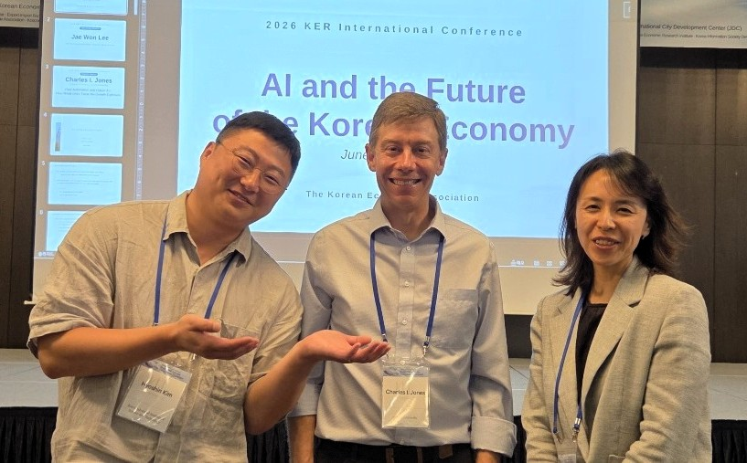

I am a Ph.D. candidate in Business and Technology Management at the School of Business, KAIST. My research interests lie in social science and policy research using econometric methods, as well as the application of AI to economic, social, and policy research.
Publications
Tracking Economic Disparities in North Korea: Satellite Imagery Analysis Using AI with Policy Insights
Working Papers
How Information about Generative AI Shapes Workers' Expectations: Evidence from a Survey Experiment
GeoReg: Weight-Constrained Few-Shot Regression for Socio-Economic Estimation using LLM
Monitoring Urban Slums from the Sky: How Redevelopment Projects Shape the Spatial Pattern of Slum Settlements over Time
Teaching
Financial Markets and Institutions
Business Mathematics
BTM408 Economics of Technology and Innovation
BTM701 Advanced Econometrics
Intermediate Macroeconomics
MSB200 Introduction to Business Management
MSB408 Economics of Technology
MSB215 Microeconomics
ES10004 Economic Data Analysis
ES10091 Introduction to Probability and Statistics
Education
Ph.D. in Business and Technology Management,
KAIST,
Mar 2021–Present
Dissertation:
Social and Policy Implications of AI
Supervisor: Prof. Jihee Kim
Research Group: Economic Progress and AI Research Group (Econ-AI)
Supervisor: Prof. Jihee Kim
Research Group: Economic Progress and AI Research Group (Econ-AI)
MSc in Economics and Finance,
Durham University,
2013
B.A. in Economics (Minor in Mathematics),
The University of Texas at Austin,
2009
